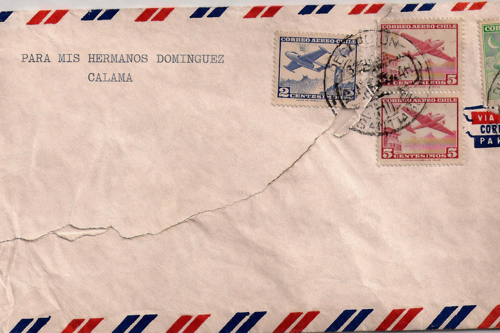

Les quiero contar algo que probablemente yo tampoco entendía cuando estaba en el colegio en Calama. En ese tiempo, cuando salía a comprar o veía alguna promoción, no pensaba mucho en por qué elegía una cosa y no otra. Era más simple: si algo se veía bueno o estaba en oferta, lo compraba. No le daba tantas vueltas.
Ahora, estando en mi último año de universidad, me doy cuenta de que muchas de esas decisiones no eran tan “libres” como pensaba. Y ahí es donde quiero que ustedes se hagan una pregunta que a mí me cambió un poco la forma de ver las cosas: ¿qué es realmente el consumo y qué tiene que ver con la economía?
Para mí, el consumo no es solo gastar plata, es tomar decisiones todos los días. Y esas decisiones, aunque parezcan pequeñas, terminan influyendo en algo mucho más grande, como la economía.
También quiero que se cuestionen algo más: ¿qué tan importante es entender cómo perciben las personas lo que ven? Porque el marketing, que antes yo veía como simple publicidad, en realidad es mucho más que eso. Es una forma de entender cómo pensamos, qué nos llama la atención y por qué confiamos en algo.
Por ejemplo, no es casualidad que un producto tenga ciertos colores, o que una tienda tenga cierta música o ambiente. Todo eso está pensado para generar una sensación. Y aunque uno no siempre se dé cuenta, influye. A mí me pasó varias veces que elegía un lugar porque “me gustaba más”, sin saber bien por qué.
Pero tampoco quiero que vean el marketing como algo negativo. Con el tiempo entendí que también tiene un lado bueno. Gracias a esto, muchas ideas pueden crecer, los emprendimientos pueden darse a conocer y uno tiene más opciones para elegir. No todo es manipulación, como a veces se piensa. Depende mucho de cómo se use.
Si algún día ustedes participan en algo relacionado con marketing, o incluso si no, creo que lo importante es no perder de vista a las personas. No se trata solo de vender, sino de entender de verdad lo que alguien necesita o valora. Puede sonar obvio, pero no siempre se hace así.
En mi caso, siento que pasé de no cuestionarme nada a empezar a darme cuenta de que el marketing está en casi todo lo que hago: en lo que compro, en lo que elijo, incluso en lo que me llama la atención sin razón clara. No es perfecto, pero entenderlo ayuda a tomar decisiones un poco más conscientes.
Eso es lo que me hubiera gustado saber antes. No para dejar de consumir, sino para hacerlo con más criterio.
Ojalá les sirva.